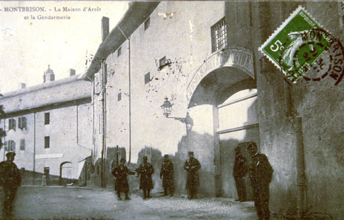
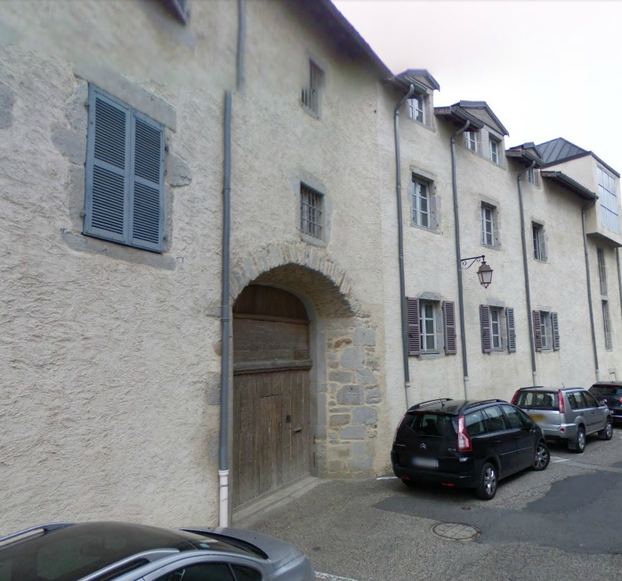
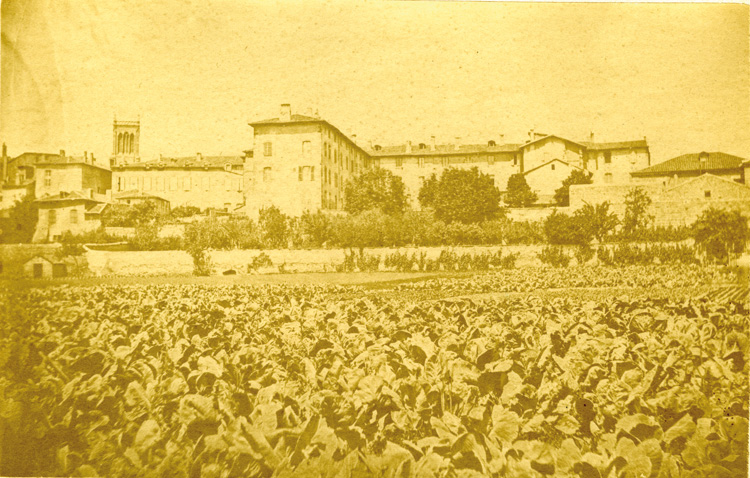
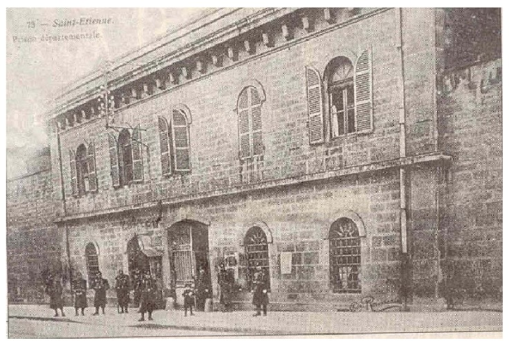
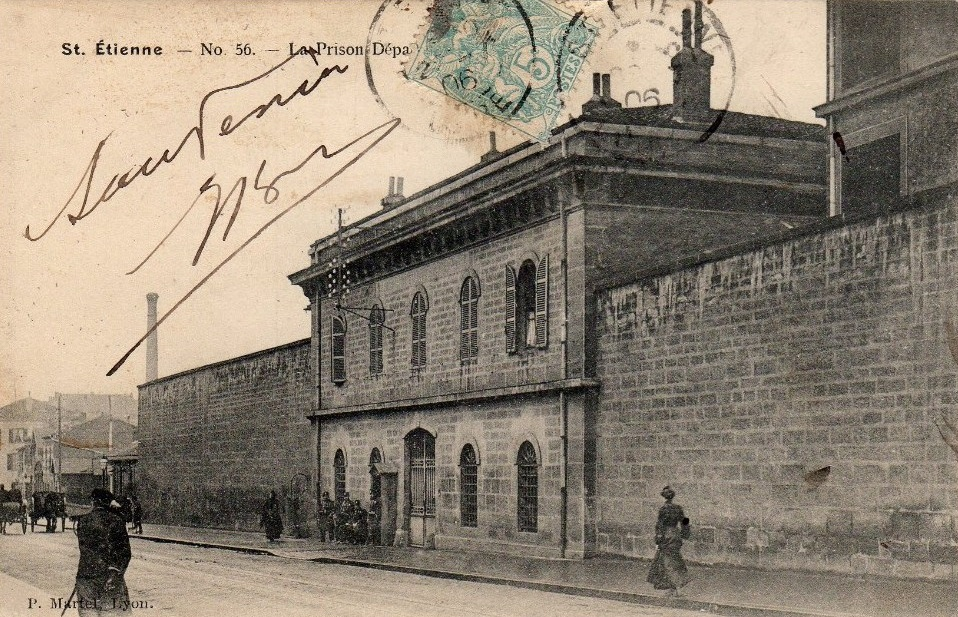

| Département | Images | Ville | Nom | Adresse | Période | Capacité | Histoire du lieu | Nombre d'exécutions |
| Loire (42) | La Talaudière | Maison d'arrêt | 607, rue de la Sauvagère | En service depuis 1968 | 328 places (2015) | Ouverte le 11 octobre 1968 | Aucune exécution | |
| Loire (42) |   |
Montbrison | Maison d'arrêt des Visitandines | Rue des Prisons / Rue des Visitandines | 1801-1957 | Ancien couvent de la Visitation, fondé en 1643. La chapelle Sainte-Marie devient en 1801 siège du tribunal criminel, puis de la cour d'assises. L'histoire des prisons en ces lieux sont cependant plus anciennes visiblement (XIV ou XVe siècle). Transfert des prisonniers à Saint-Etienne le 24 décembre 1957, fermeture le 31 décembre. Prison devenue l'école de musique Pierre Boulez. Quartier des condamnés à mort - une ancienne chapelle - démolie après 1994. | Huit exécutions en 1917, 1920, 1928, 1932 et 1948 | |
| Loire (42) |  |
Roanne | Prison des Ursulines | 4, rue Fontenille | 1793-1990 | 33 places, 10 surveillants (1962) | Ancien couvent des Ursulines, construit en 1692, jamais achevé. Religieuses expropriées en 1792, racheté par la ville en 1810. Annexe rue Jean Macé (ancien couvent des Minimes). Nouveau bâtiment construit en 1831, relié directement au tribunal établi également dans le Couvent par un simple couloir. Fermée en 1990, lieu de tournage du film "Uranus", murs d'enceinte détruits en 1994, prison rasée en janvier 2001 pour faire un parking. | Aucune exécution |
| Loire (42) |   |
Saint-Etienne | Prison départementale Bizillon | 19, rue des docteurs Charcot (approx.) | 1862-1968 | 187 places, 45 surveillants (1962) | Considérée comme insalubre dès son ouverture. 450 places, jusqu'à 600 détenus. Actuellement, immeubles commerciaux et Ecole Nationale Supérieure de Sécurité Sociale. | Aucune exécution |
{kind=link}
{kind=link}
{kind=link}
{kind=link}
{kind=link}